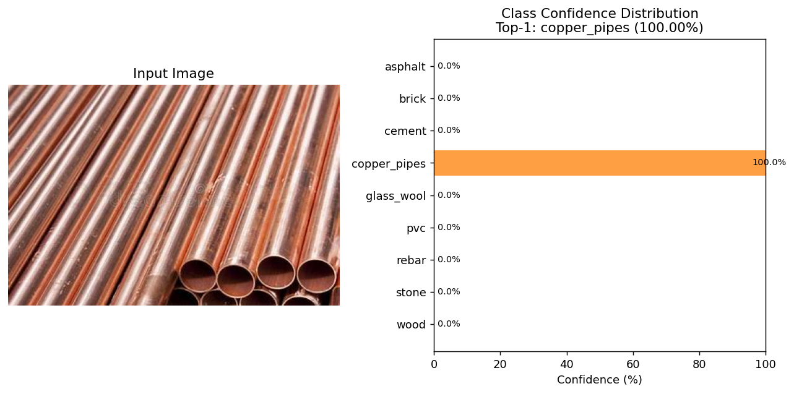
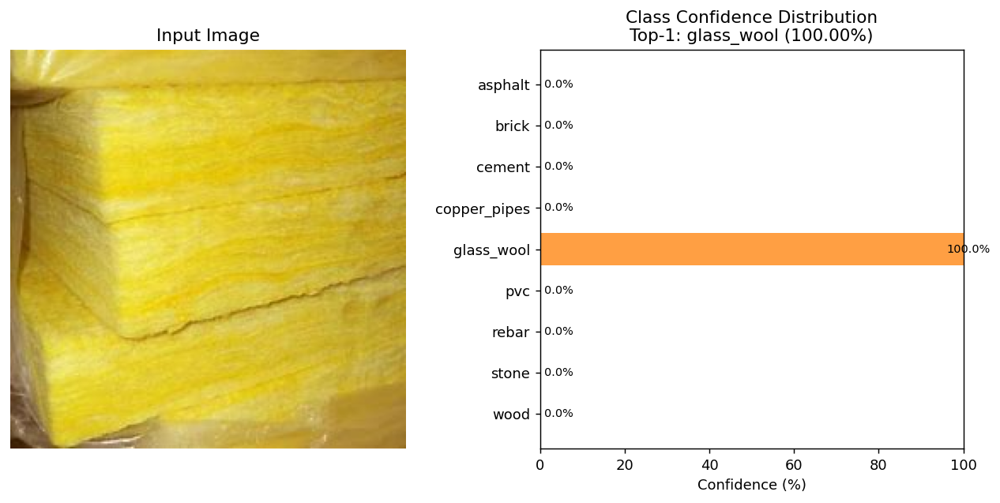
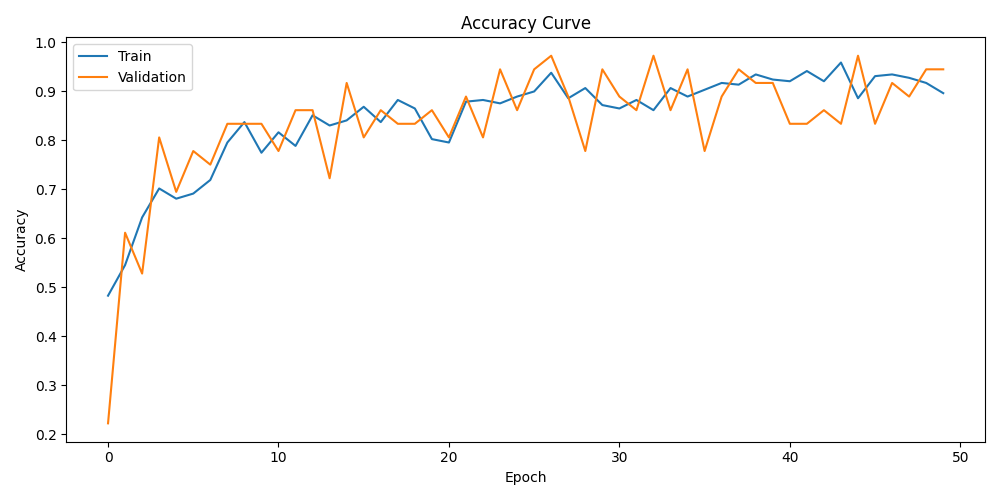
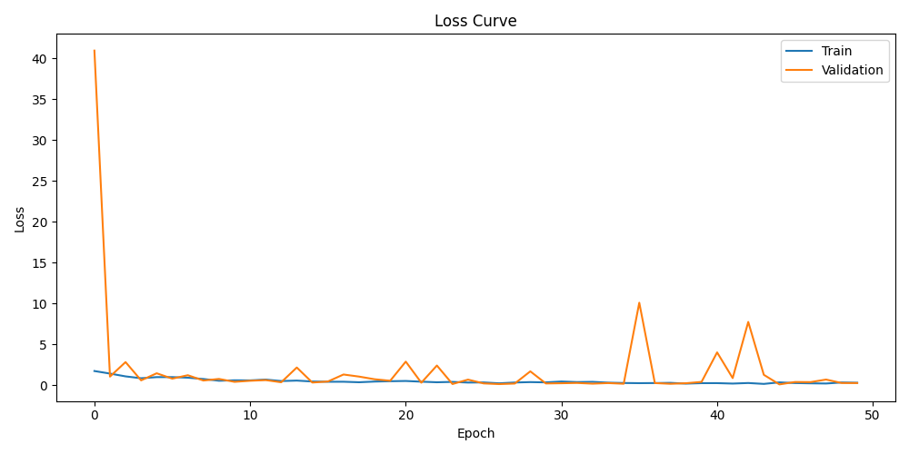
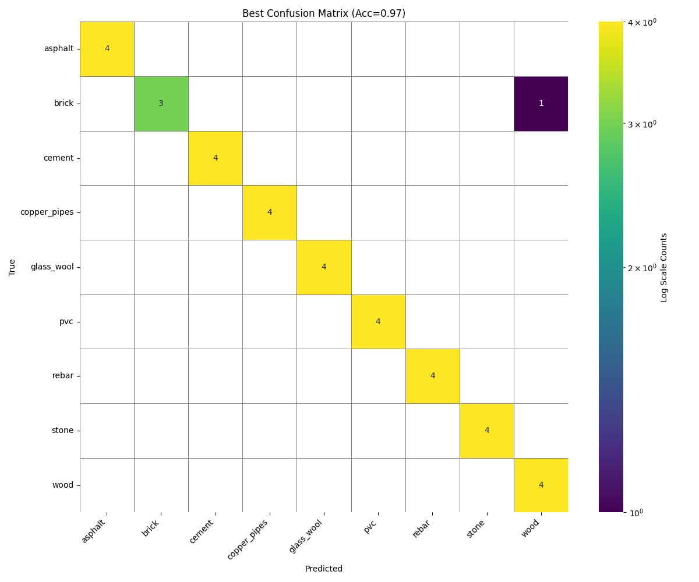
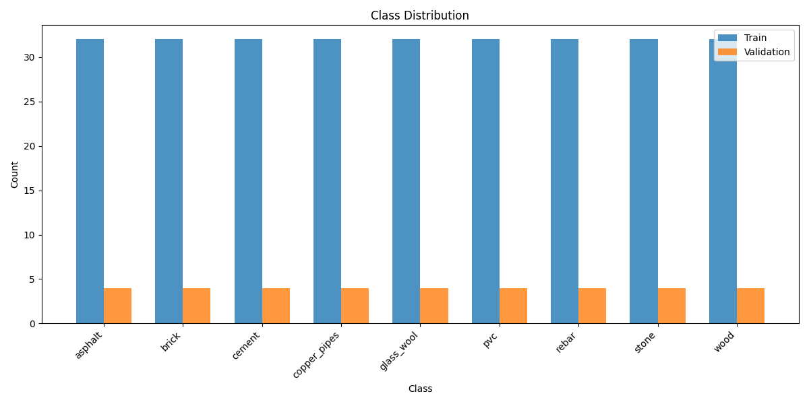

不只是模型推理，而是一套可落地的材料管理业务系统。
支持本地上传、浏览器摄像头实时拍摄、内置样例三种输入方式，输出材料类别与置信度分布。
9 类材料的简介、产地、库存集中维护，识别结果自动关联材料档案一并展示。
完整记录每次识别与反馈，支持按用户、操作类型、材料名称、时间区间组合检索。
用户可以标注正确类别，反馈记录与原识别结果关联保存，为后续模型迭代积累数据。
管理员 / 普通用户两级权限，服务端强制校验；密码经加密摘要存储，支持自助注册。
识别结果以柱状图呈现全部类别概率分布，并支持导出 PNG 用于报告与答辩材料。
从图像输入到材料档案展示，全过程自动化完成。
用户上传本地图片、调用摄像头拍摄，或直接选择内置样例图片。
图像统一缩放至 256 后中心裁剪 224×224，按 ImageNet 统计量归一化，输入 ResNet50 前向计算。
Softmax 输出各类别概率，取最大者为识别结果，自动关联材料简介、产地与库存并写入日志。
以下为系统对真实样本的推理输出，由模型直接生成。


采用 ImageNet 预训练权重迁移学习，AdamW 优化器，学习率 1e-3，权重衰减 1e-4， 批量大小 16，训练轮数 50，训练集 / 验证集 / 测试集按 8 : 1 : 1 划分。




全部组件均为开源方案，可离线部署。
典型的三层结构：表现层、业务层与数据 / 算法层。
Windows 下双击 runserver.cmd 即可完成环境准备、建表与数据初始化。
关于在线演示 本页是项目展示页。完整的识别功能需要运行 Python 服务（PyTorch 推理 + Django 后端）， 而 GitHub Pages 只能托管静态文件，无法运行服务端程序，因此请按下方步骤在本地启动。
# 1. 获取代码 git clone https://github.com/KyoukaAlice/material-recognition-django.git cd material-recognition-django # 2. 一键启动（自动创建虚拟环境、安装依赖、建表、导入数据） runserver.cmd # 3. 浏览器访问 http://127.0.0.1:8000 # 默认账号：Admin / 123456 # ---- 手动方式 ---- python -m venv .venv .venv\Scripts\activate pip install -r requirements.txt python manage.py migrate python manage.py import_legacy_data python manage.py runserver
模型权重
训练好的 best_model.pth（约 90 MB）未纳入 Git 仓库，
请从本仓库的 Releases 页面下载后放入 models/ 目录。